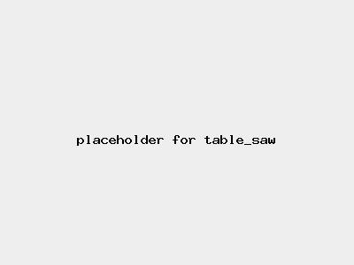

Risk Assessment / Table Saw
High Risk
| Risk Assessment / Table Saw | Level 3 High Risk |
|  |
|
|
| Before | During | After |
|---|---|---|
|
|
|
| Hazard | Persons | Before Controls | Controls | After Controls | ||||
|---|---|---|---|---|---|---|---|---|
| Severity | Likelihood | Risk | Severity | Likelihood | Risk | |||
| Entanglement in moving machinery | Operator | Level 4 Fatality, life-changing injury | Level 2 Unlikely | Level 3 High |
| Level 4 Fatality, life-changing injury | Level 1 Very unlikely | Level 2 Medium |
| cut | operator | Level 4 Fatality, life-changing injury | Level 2 Unlikely | Level 3 High |
| Level 4 Fatality, life-changing injury | Level 1 Very unlikely | Level 2 Medium |
| kick-back | People in the vicinity | Level 3 Serious injury | Level 2 Unlikely | Level 2 Medium |
| Level 3 Serious injury | Level 1 Very unlikely | Level 2 Medium |
| Ejected material | Operator | Level 2 Significant injury | Level 2 Unlikely | Level 2 Medium |
| Level 2 Significant injury | Level 1 Very unlikely | Level 1 Low |